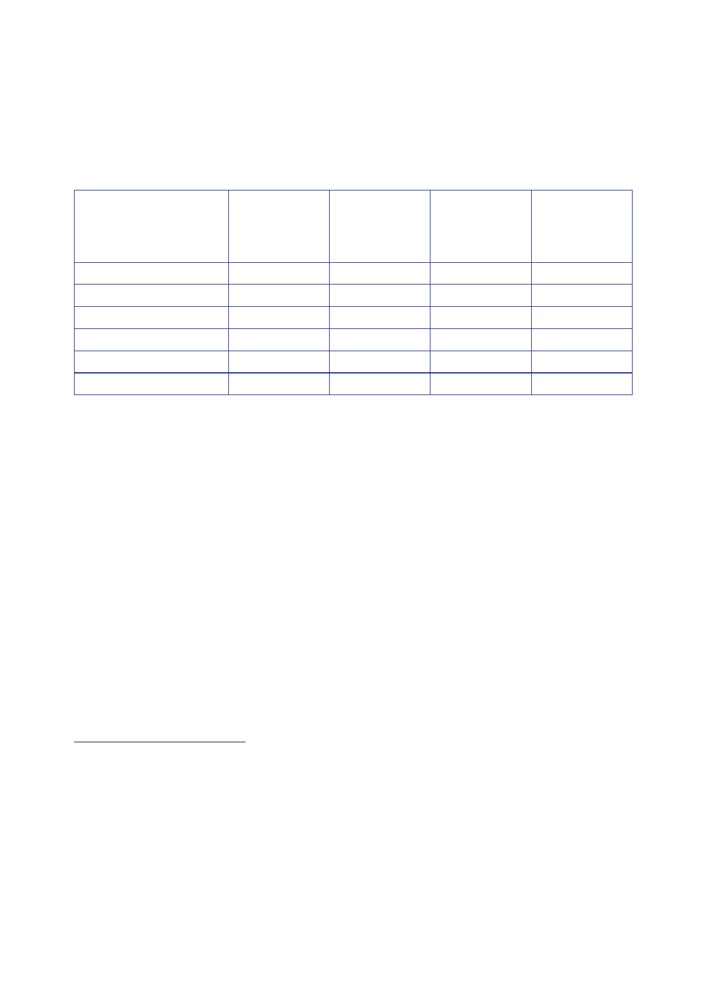

The Report
of the Iraq Inquiry
248.
Ms Harman
informed the House of Commons on 12 October that
Mr Gardiner
would not
be able to meet the target set in her June 2006 update for the
completion
of pre‑June
2006 inquests (the end of 2006).150
Outstanding
inquests
70
70
57
29
15
2
Of
which
Service
Personnel
59
59
48
25
11
2
Of
which
civilian
11
11
9
4
4
0
Outstanding
inquests
held
since
June
2006
0
9
28
56
72
104
249.
The June 2007
report stated that of the 72 inquests which had been
completed
by the
Oxfordshire Coroner’s Office since June 2006, Mr Gardiner had
conducted five,
Sir Richard
Curtis six, Ms Selena Lynch 28, Mr Andrew Walker 32, and
Ms Jennifer
Leeming,
the Greater Manchester West Coroner, one.157
250.
The additional
resources provided by the Government in June 2006 enabled
the
Oxfordshire
Coroner’s office to clear the backlog of outstanding inquests (into
deaths
occurring
before June 2006) by October 2007.
251.
The two
outstanding inquests reported in the October 2007 report related to
the
deaths of
Fusilier Gordon Gentle on 28 June 2004 and Lieutenant Richard
Palmer on
15 April
2006. The inquest into Fusilier Gentle’s death was due to open on
29 October
2007. The
coroner had decided to await the completion of the BOI into
Lt Palmer’s death
before
opening an inquest; that inquest would therefore not be held until
2008.
150
House of
Commons, Official
Report, 12
October 2006, column 28WS.
151
House of
Commons, Official
Report, 5 June
2006, column 4WS.
152
House of
Commons, Official
Report, 12 October
2006, column 26WS. Nine inquests had been
completed
since the June 2006 WMS, but Mr Gardiner had advised the
Government of nine additional
outstanding
cases relating to deaths from previous conflicts and overseas
military exercises.
153
House of
Commons, Official
Report, 18 December
2006, column 112WS.
154
House of
Commons, Official
Report, 29 March
2007, column 120WS. The Statement corrected the
number
given in the 18 December 2006 Statement for Inquests held since
October 2006, from 18 to 19.
155
House of
Commons, Official
Report, 20 June
2007, column 97WS.
156
House of
Commons, Official
Report, 30 October
2007, column 35WS.
157
House of
Commons, Official
Report, 20 June
2007, column 97WS.
120